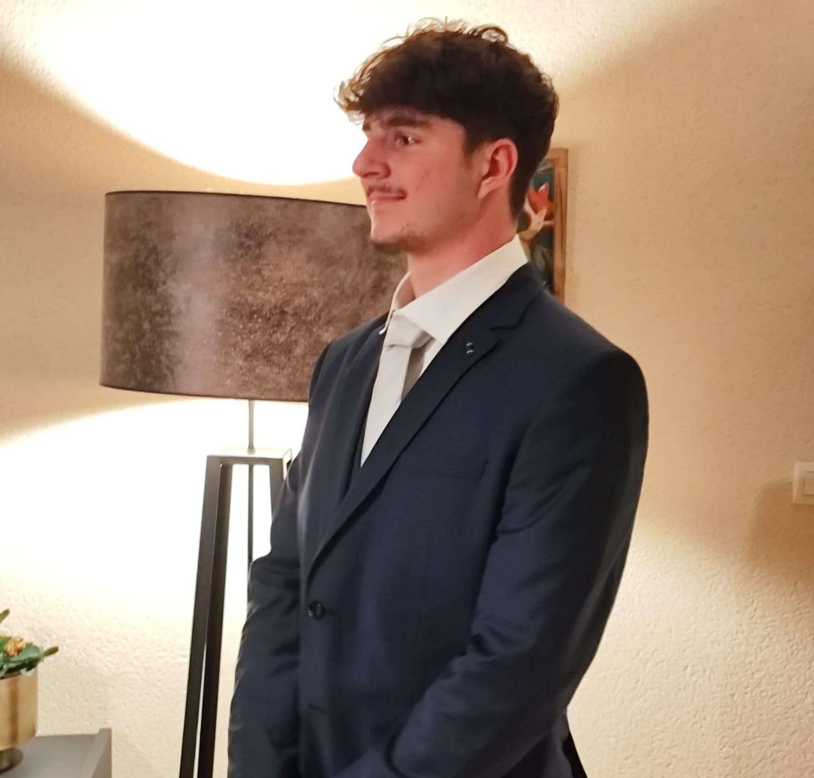

Développeur Informatique / Étudiant BTS SIO
Mazé-Milon, France
dupontleo999@gmail.com
06 50 56 17 92
Compétences
HTML / CSSLangues
Anglais (Niveau B2+)Atouts & Intérêts
Actuellement étudiant en 1ère année de BTS SIO (Solutions Logicielles et Applications Métiers) au Lycée La Colinière à Nantes. Passionné par le métier de développeur informatique, j'y consacre une grande partie de mon temps libre à travers des projets personnels. Mon parcours de sportif de haut niveau m'a forgé un esprit travailleur et déterminé, des qualités que je mets aujourd'hui au service de l'ingénierie logicielle et du code.
ODO-VÍA Smart Systems (Angers)
Découverte du cycle de développement logiciel et du débogage. Initiation au langage Go et observation des méthodes de travail en équipe.
USBA Beaufort
Participation à l'entraînement de jeunes athlètes lors de l'absence des coachs. Développement du sens des responsabilités, de la pédagogie et de l'encadrement.
Théâtre Info Système (Mazé)
Apprentissage du travail en entreprise. Observation de la création et maintenance de projets d'applications desktop.
Lycée La Colinière, Nantes
Services Informatiques aux Organisations, option Solutions Logicielles et Applications Métiers. Apprentissage approfondi du développement logiciel et web, gestion de bases de données et architecture applicative.
Lycée Mongazon, Angers
Spécialités Mathématiques et NSI (Numérique et Sciences Informatiques).
Mention Assez Bien